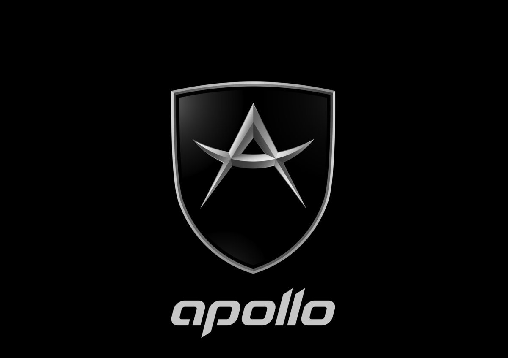

Apollo est une marque de voiture sportive créé en 2001
par Roland Gumpert ancien président de Audi Sportt. Anciennement
appelé Gumpert Sportwagenmanufaktur GmbH, Apollo est une marque
assez recente mais qui commence a se faire un nom pour ses design
de voiture assez originaux et des performances au rendez-vous.

Leur modèle le plus performant est actuellement
la Apollo Arrow.